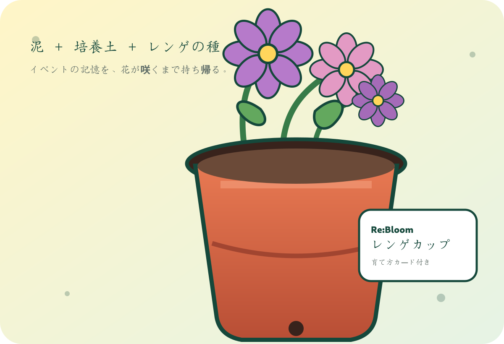

土地を知る
現地の状態や背景を見て、耕作放棄地を自分の言葉で考えます。
泥と花の一日MUD, FLOWERS, CONNECTION
2026.9.20 午後開催予定
泥ん子運動会は、耕作放棄地の問題を「説明を聞くだけ」で終わらせず、土に触れ、人と出会い、花を持ち帰る体験に変えるイベントです。

なぜ、運動会？WHY AN EVENT?
耕作放棄地を「遠い課題」にしないためには、そこへ行く理由が必要です。泥の中で笑い合う時間が、土地を知る最初の記憶になります。
現地の状態や背景を見て、耕作放棄地を自分の言葉で考えます。
年齢や立場を越え、泥の中で同じチームになります。
レンゲカップを育て、イベントの後にも土地を思い出します。
遊びのメニューTHE DAY'S PROGRAM
競技は安全確認を行い、参加者や現地条件に合わせて調整します。
チームで泥を運び、速さと丁寧さを競います。回収した泥はレンゲカップにも使用します。
足を取られる泥の上を、仲間へバトンをつなぎながら走ります。
踏ん張るほど滑る、泥ならではの綱引き。観る側も盛り上がる競技です。
安全な範囲を決め、相手のしっぽを取り合います。参加状況に応じて内容を調整します。
土地を持ち帰るTAKE THE LAND HOME
イベントの泥と培養土を混ぜ、レンゲを育てるカップを持ち帰ります。楽しかった一日を、花が咲くまでの時間へつなぎます。

競技で回収した現地の泥を、少量ずつ使用します。
植物が育ちやすいよう、市販の培養土と混ぜます。
底穴付きの育苗ポットへ種をまきます。
育て方カードを見ながら、花が咲くまで見守ります。
レンゲは、かつて水田の裏作と緑肥に使われ、春の農村風景をつくってきた花です。
持ち帰って世話をすることで、泥に触れた一日が、発芽や開花を待つ時間へつながります。
圃場へ直接播種せず、排水や次の利用を妨げないカップ方式にしています。
レンゲはマメ科の緑肥作物ですが、今回のカップは土壌改良効果を目的とするものではなく、学びと記憶の体験です。 詳しく知る →
準備の裏側BEFORE THE DAY
泥を使うイベントだからこそ、土地の状態、動線、水、衛生、天候を事前に確認します。
危険物や足元の状態を確認し、人が入れる範囲を整えます。
深さ、ぬかるみ、転倒リスクを確認し、競技内容を調整します。
泥を落とす場所と、着替えられる環境を準備します。
天候と現地状態を確認し、無理に実施しません。
安全を学ぶLEARN BEFORE PLAY
泥遊びは楽しい一方、転倒、衝突、動線の混雑、体調変化などを想定する必要があります。外遊びや子ども向けスポーツを継続運営するNPO法人クラブぽっとを訪ね、設計の考え方を学びました。
相談の記録を読む ↗競技中、待機、見学、手洗いの人が交差しすぎない配置を考えます。
天候、足元、参加者の体調に応じ、競技を短縮・中止できる判断基準を準備します。
進行だけでなく、子どもと周囲の状況を見る担当を明確にします。
当日の流れTHE DAY'S FLOW
午後開催を基本に、会場と参加人数に合わせて最終調整します。
会場の使い方と競技上の注意を全員で確認します。
なぜこの場所で取り組むのかを短く共有します。
チーム分けを行い、複数の競技を実施します。
泥と培養土を混ぜ、種をまいて持ち帰ります。
会場を片付け、次の活動へつなぐ記録を残します。
参加する前にBEFORE YOU JOIN
持ち帰るものWHAT REMAINS AFTER THE DAY
草の多さだけで判断せず、水、土、管理する人、周辺の暮らしまで考える視点。
深刻な問題に、笑いながら入っていける経験。誰かに話したくなる入口。
レンゲカップを通じ、イベント後も土地とのつながりを思い出す時間。
よくある質問FAQ
人数把握と安全案内のため、可能な範囲でフォームからお知らせください。見学・応援は無料です。
見学、応援、レンゲカップづくり、運営補助など、泥に入らない関わり方も用意します。
雨量、雷、風、会場の状態を見て判断します。安全が確保できない場合は中止または内容変更とし、申込者へ連絡します。
安全性、アクセス、水の確保、整備作業を比較して最終会場を選定後、集合場所と駐車場を参加者へ案内します。
次の一歩TURN INTEREST INTO ACTION
参加する、応援する、専門性を持ち寄る。今できる形から、能登の土地とのつながりを始められます。
参加、見学、応援。自分に合う入口から、能登の土地に関わってください。